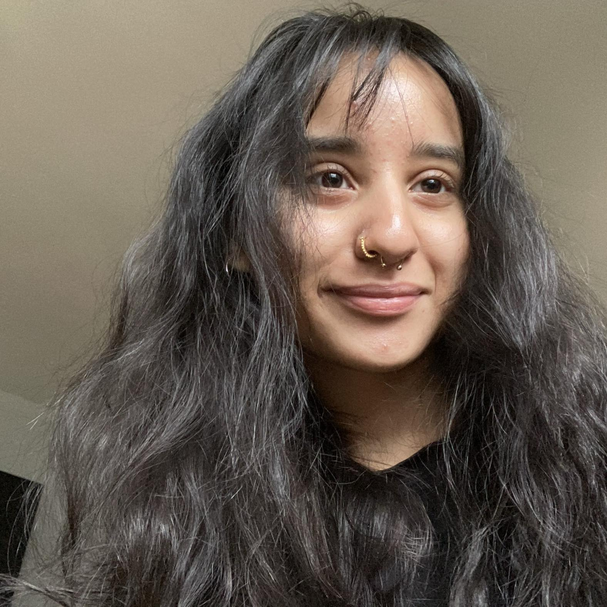
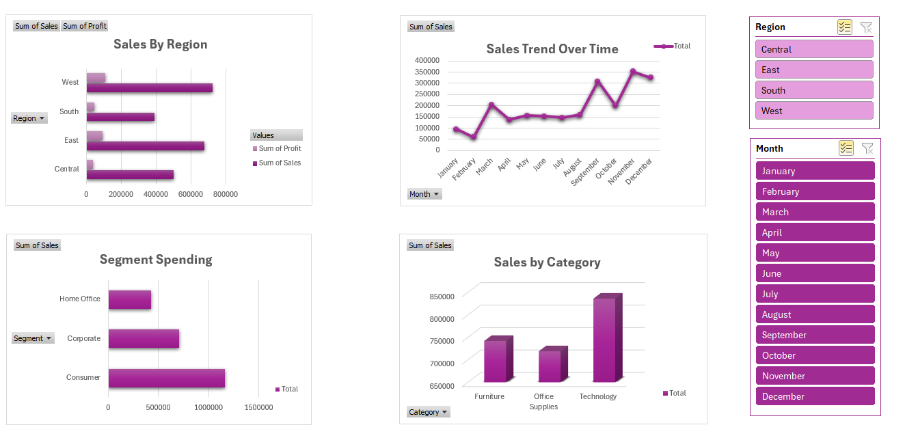
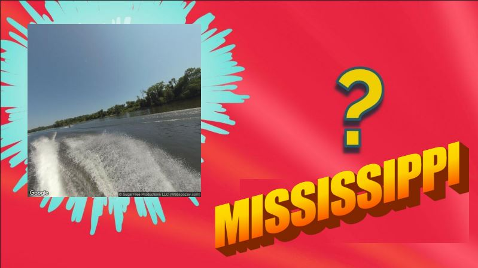
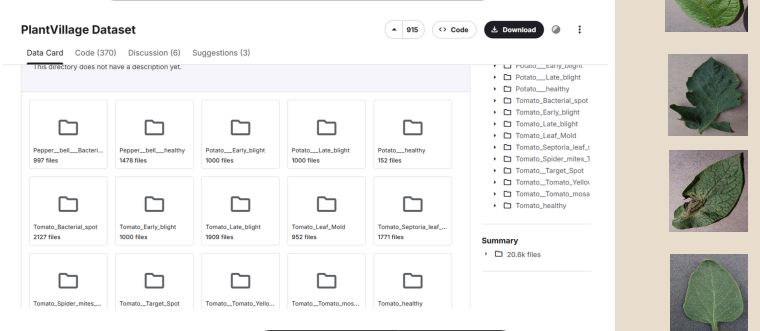
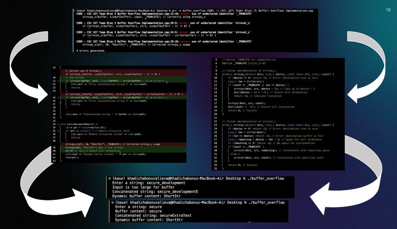
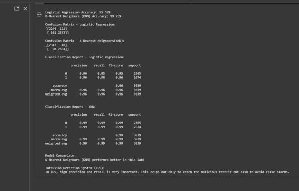
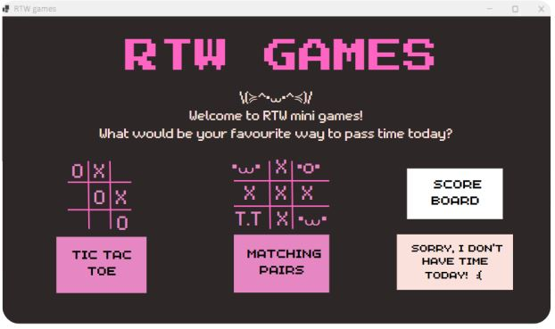
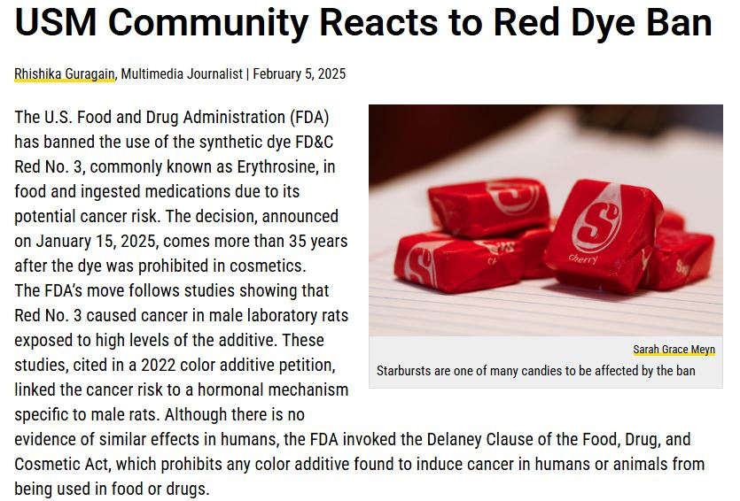

    <script>
        const canvas = document.getElementById('canvas');
        const ctx = canvas.getContext('2d');

        canvas.width = window.innerWidth;
        canvas.height = window.innerHeight;

        const particles = [];
        const particleCount = 100;

        class Particle {
            constructor() {
                this.x = Math.random() * canvas.width;
                this.y = Math.random() * canvas.height;
                this.vx = (Math.random() - 0.5) * 0.5;
                this.vy = (Math.random() - 0.5) * 0.5;
                this.radius = Math.random() * 2;
            }

            update() {
                this.x += this.vx;
                this.y += this.vy;

                if (this.x < 0 || this.x > canvas.width) this.vx *= -1;
                if (this.y < 0 || this.y > canvas.height) this.vy *= -1;
            }

            draw() {
                ctx.beginPath();
                ctx.arc(this.x, this.y, this.radius, 0, Math.PI * 2);
                ctx.fillStyle = 'rgba(236, 72, 153, 0.5)';
                ctx.fill();
            }
        }

        for (let i = 0; i < particleCount; i++) {
            particles.push(new Particle());
        }

        function animate() {
            ctx.clearRect(0, 0, canvas.width, canvas.height);

            particles.forEach(particle => {
                particle.update();
                particle.draw();
            });

            particles.forEach((p1, i) => {
                particles.slice(i + 1).forEach(p2 => {
                    const dx = p1.x - p2.x;
                    const dy = p1.y - p2.y;
                    const dist = Math.sqrt(dx * dx + dy * dy);

                    if (dist < 100) {
                        ctx.beginPath();
                        ctx.moveTo(p1.x, p1.y);
                        ctx.lineTo(p2.x, p2.y);
                        ctx.strokeStyle = `rgba(236, 72, 153, ${0.2 * (1 - dist / 100)})`;
                        ctx.stroke();
                    }
                });
            });

            requestAnimationFrame(animate);
        }

        animate();

        window.addEventListener('resize', () => {
            canvas.width = window.innerWidth;
            canvas.height = window.innerHeight;
        });

        document.querySelectorAll('a[href^="#"]').forEach(anchor => {
            anchor.addEventListener('click', function (e) {
                e.preventDefault();
                const target = document.querySelector(this.getAttribute('href'));
                if (target) {
                    target.scrollIntoView({ behavior: 'smooth', block: 'start' });
                }
            });
        });
    </script>
</body>
</html><!DOCTYPE html>
<html lang="en">
<head>
    <meta charset="UTF-8">
    <meta name="viewport" content="width=device-width, initial-scale=1.0">
    <title>Rhishika Guragain - CS Portfolio</title>
    <style>
        * {
            margin: 0;
            padding: 0;
            box-sizing: border-box;
        }

        :root {
            --primary: #ec4899;
            --primary-dark: #b05488;
            --secondary: #f472b6;
            --dark: #1a141f;
            --dark-light: #0a0a0a;
            --text: #e2e8f0;
            --text-muted: #94a3b8;
            --accent: #fbbf24;
        }

        body {
            font-family: -apple-system, BlinkMacSystemFont, 'Segoe UI', Roboto, Oxygen, Ubuntu, Cantarell, sans-serif;
            background: var(--dark);
            color: var(--text);
            line-height: 1.6;
            overflow-x: hidden;
        }

        .bg-animation {
            position: fixed;
            top: 0;
            left: 0;
            width: 100%;
            height: 100%;
            z-index: -1;
            background: linear-gradient(135deg, var(--dark) 0%, var(--dark-light) 100%);
        }

        .bg-animation canvas {
            position: absolute;
            top: 0;
            left: 0;
        }

        nav {
            position: fixed;
            top: 0;
            width: 100%;
            background: rgba(0, 0, 0, 0.8);
            backdrop-filter: blur(10px);
            padding: 1rem 2rem;
            z-index: 1000;
            border-bottom: 1px solid rgba(236, 72, 153, 0.1);
        }

        nav ul {
            display: flex;
            justify-content: center;
            gap: 2rem;
            list-style: none;
            flex-wrap: wrap;
        }

        nav a {
            color: var(--text);
            text-decoration: none;
            font-weight: 500;
            transition: color 0.3s;
            position: relative;
        }

        nav a:hover {
            color: var(--primary);
        }

        nav a::after {
            content: '';
            position: absolute;
            bottom: -5px;
            left: 0;
            width: 0;
            height: 2px;
            background: var(--primary);
            transition: width 0.3s;
        }

        nav a:hover::after {
            width: 100%;
        }

        section {
            min-height: 100vh;
            padding: 6rem 2rem 4rem;
            max-width: 1200px;
            margin: 0 auto;
        }

        h1 {
            font-size: 6rem;
            background: linear-gradient(135deg, var(--primary), var(--secondary), var(--accent));
            -webkit-background-clip: text;
            -webkit-text-fill-color: transparent;
            background-clip: text;
            margin-bottom: 0.4rem;
            animation: fadeInUp 0.8s ease-out;
        }

        h2 {
            font-size: 4.5rem;
            margin-bottom: 2rem;
            color: #FFABD4;
            animation: fadeInUp 0.8s ease-out;
            text-align: center;
        }

        .subtitle {
            font-size: 1.2rem;
            color: var(--text-muted);
            font-style: italic;
            margin-bottom: 1.5rem;
            animation: fadeInUp 0.8s ease-out 0.2s backwards;
        }

        .hero {
            display: flex;
            flex-direction: column;
            justify-content: center;
            align-items: center;
            text-align: center;
        }

        .cta-buttons {
            display: flex;
            gap: 1rem;
            margin-top: 2rem;
            animation: fadeInUp 0.8s ease-out 0.4s backwards;
        }

        .btn {
            padding: 0.8rem 2rem;
            border: none;
            border-radius: 8px;
            font-size: 1rem;
            font-weight: 600;
            cursor: pointer;
            transition: all 0.3s;
            text-decoration: none;
            display: inline-block;
        }

        .btn-primary {
            background: var(--primary);
            color: white;
        }

        .btn-primary:hover {
            background: var(--primary-dark);
            transform: translateY(-2px);
            box-shadow: 0 10px 25px rgba(236, 72, 153, 0.3);
        }

        .btn-secondary {
            background: transparent;
            color: var(--primary);
            border: 2px solid var(--primary);
        }

        .btn-secondary:hover {
            background: var(--primary);
            color: white;
            transform: translateY(-2px);
        }

        .grid {
            display: grid;
            grid-template-columns: repeat(auto-fit, minmax(500px, 1fr));
            gap: 2rem;
            margin-top: 2rem;
        }

        .card {
            background: rgba(10, 10, 10, 0.7);
            border: 1px solid rgba(236, 72, 153, 0.2);
            border-radius: 12px;
            padding: 2rem;
            transition: all 0.3s;
            backdrop-filter: blur(10px);
        }

        .card:hover {
            transform: translateY(-5px);
            border-color: var(--primary);
            box-shadow: 0 10px 30px rgba(236, 72, 153, 0.2);
        }

        .card h3 {
            color: var(--primary);
            margin-bottom: 1rem;
            font-size: 1.5rem;
        }

        .card p {
            color: var(--text-muted);
            margin-bottom: 1rem;
        }

        .card strong {
            color: var(--text);
        }

        .card img {
            width: 100%;
            height: 200px;
            object-fit: cover;
            border-radius: 8px;
            margin-bottom: 1rem;
        }

        .tags {
            display: flex;
            flex-wrap: wrap;
            gap: 0.5rem;
            margin-top: 1rem;
        }

        .tag {
            background: rgba(236, 72, 153, 0.2);
            color: var(--accent);
            padding: 0.3rem 0.8rem;
            border-radius: 20px;
            font-size: 0.85rem;
        }

        .skills-grid {
            display: grid;
            grid-template-columns: repeat(auto-fit, minmax(250px, 1fr));
            gap: 1.5rem;
            margin-top: 2rem;
        }

        .skill-category h3 {
            color: var(--secondary);
            margin-bottom: 1rem;
        }

        .skill-list {
            display: flex;
            flex-wrap: wrap;
            gap: 0.5rem;
        }

        .skill-item {
            background: rgba(244, 114, 182, 0.15);
            padding: 0.5rem 1rem;
            border-radius: 8px;
            border: 1px solid rgba(244, 114, 182, 0.3);
            transition: all 0.3s;
        }

        .skill-item:hover {
            background: rgba(244, 114, 182, 0.3);
            transform: scale(1.05);
        }

        .contact-links {
            display: flex;
            gap: 1.5rem;
            margin-top: 2rem;
            justify-content: center;
            flex-wrap: wrap;
        }

        .contact-link {
            display: flex;
            align-items: center;
            gap: 0.5rem;
            color: var(--text);
            text-decoration: none;
            padding: 0.8rem 1.5rem;
            background: rgba(236, 72, 153, 0.1);
            border-radius: 8px;
            border: 1px solid rgba(236, 72, 153, 0.3);
            transition: all 0.3s;
        }

        .contact-link:hover {
            background: rgba(236, 72, 153, 0.2);
            transform: translateY(-2px);
        }

        .languages-grid {
            display: grid;
            grid-template-columns: repeat(auto-fit, minmax(200px, 1fr));
            gap: 1rem;
            margin-top: 2rem;
        }

        .language-card {
            background: rgba(244, 114, 182, 0.1);
            border: 1px solid rgba(244, 114, 182, 0.3);
            border-radius: 12px;
            padding: 1.5rem;
            text-align: center;
            transition: all 0.3s;
        }

        .language-card:hover {
            background: rgba(244, 114, 182, 0.2);
            transform: translateY(-3px);
        }

        .language-name {
            font-size: 1.3rem;
            font-weight: 600;
            color: var(--primary);
            margin-bottom: 0.5rem;
        }

        .language-level {
            color: var(--text-muted);
            font-size: 0.9rem;
        }

        @keyframes fadeInUp {
            from {
                opacity: 0;
                transform: translateY(30px);
            }
            to {
                opacity: 1;
                transform: translateY(0);
            }
        }

        .project-links {
            display: flex;
            gap: 1rem;
            margin-top: 1rem;
        }

        .project-link {
            color: var(--accent);
            text-decoration: none;
            font-weight: 500;
            transition: color 0.3s;
        }

        .project-link:hover {
            color: var(--primary);
        }

        footer {
            text-align: center;
            padding: 2rem;
            color: var(--text-muted);
            border-top: 1px solid rgba(236, 72, 153, 0.1);
        }

        .education-card {
            background: rgba(10, 10, 10, 0.7);
            border: 1px solid rgba(236, 72, 153, 0.2);
            border-radius: 12px;
            padding: 2rem;
            backdrop-filter: blur(10px);
        }

        .education-card h3 {
            color: var(--primary);
            font-size: 1.5rem;
            margin-bottom: 0.5rem;
        }

        .achievements {
            margin-top: 1rem;
            padding-top: 1rem;
            border-top: 1px solid rgba(236, 72, 153, 0.1);
        }

        .achievement-item {
            display: inline-block;
            background: rgba(251, 191, 36, 0.1);
            padding: 0.4rem 0.8rem;
            border-radius: 6px;
            margin: 0.3rem;
            font-size: 0.9rem;
        }

        @media (max-width: 768px) {
            h1 { font-size: 2.5rem; }
            h2 { font-size: 2rem; }
            nav ul { gap: 1rem; }
            .cta-buttons { flex-direction: column; width: 100%; }
            .btn { width: 100%; }
        }

        .experience-list {
        display: flex;
        flex-direction: column;
        gap: 2.5rem;
        }

        .experience-item {
        padding-bottom: 2rem;
        border-bottom: 1px solid var(--border);
        }

        .experience-header {
        display: flex;
        justify-content: space-between;
        align-items: flex-start;
        gap: 1rem;
        }

        .experience-header h3 {
        margin: 0;
        font-size: 1.2rem;
        }

        .role {
        font-weight: 500;
        color: var(--accent);
        margin-top: 0.25rem;
        }

        .meta {
        text-align: right;
        font-size: 0.9rem;
        color: var(--text-muted);
        display: flex;
        flex-direction: column;
        }

        .experience-points {
        margin-top: 0.75rem;
        margin-left: 1.25rem;
        color: var(--text-muted);
        }

        .experience-points li {
        margin-bottom: 0.5rem;
        }

        .tags {
        margin-top: 0.75rem;
        display: flex;
        flex-wrap: wrap;
        gap: 0.5rem;
        }
        /* Project bullet list styling */
        .card ul {
            margin-left: 2.5rem;          /* more indentation */
            margin-top: 0.75rem;
            margin-bottom: 1rem;
            color: var(--text-muted);     /* match paragraph text */
        }
        
        .card ul li {
            margin-bottom: 0.6rem;
            line-height: 1.6;
        }
        
        /* Optional: nicer bullet color without changing text color */
        .card ul li::marker {
            color: var(--primary);
        }
</style>

</head>
<body>
    <div class="bg-animation">
        <canvas id="canvas"></canvas>
    </div>

    <nav>
        <ul>
            <li><a href="#home">Home</a></li>
            <li><a href="#about">About</a></li>
            <li><a href="#projects">Projects</a></li>
            <li><a href="#research">Research</a></li>
            <li><a href="#experience">Experience</a></li>
            <li><a href="#skills">Skills</a></li>
            <li><a href="#languages">Languages</a></li>
            <li><a href="#contact">Contact</a></li>
        </ul>
    </nav>

    <section id="home" class="hero">
     
        <h1> Rhishika Guragain </h1>
        <p class="subtitle">Computer Science Student | Data Analysis and Ethical Technology Enthusiast</p>
        <div class="cta-buttons">
            <a href="#projects" class="btn btn-primary">View My Work</a>
            <a href="#contact" class="btn btn-secondary">Get In Touch</a>
        </div>
    </section>

    <section id="about">
        <h2>About Me</h2>
        <div class="education-card">
            <h3>University of Southern Mississippi (May 2026🎓)</h3>
            <p><strong>B.S. in Computer Science</strong> | <strong>Minor:</strong> Economic Data Analysis </p>
            <p><strong>GPA:</strong> 3.93/4.0</p>
            <div class="achievements">
                <span class="achievement-item">🏆 President's List 2023–2025</span>
                <span class="achievement-item">🏆 Dean's List 2025</span>
            </div>
        </div>
        <div class="card" style="margin-top: 2rem;">
            <p style="margin-top: 1rem;"> I’m a Computer Science major with a minor in Economic Data Analysis and an international student who brings a multicultural, global perspective to technology and data-driven problem solving. Fluent in four languages, I enjoy bridging technical expertise with clear communication to create solutions that are both effective and human-centered.</p>
            <p>My interests center on data analysis, machine learning, and ethical technology, with a strong focus on issues such as bias, privacy, and social impact in AI systems. I’m driven by research that asks not only what technology can do, but what it should do. Alongside my analytical work, I have experience in IT support, teaching, and quantitative research, which has strengthened my ability to translate complex data into actionable insights. I’m currently seeking data analyst opportunities where I can combine analytical rigor with responsible innovation. I also have interest in front end and UI/UX research, as I can't resist adding an aesthetic touch to anything I create.</p>
        </div>
    </section>

    <section id="projects">
        <h2>Projects</h2>

<div class="grid">
    <div class="card" style="display: block; gap: 1.5rem;">

        

        <div style="margin-top: 1rem;">
            <h3>Retail Sales Data Analysis Dashboard</h3>

            <p>Analyze retail sales data to uncover trends, identify top-performing regions, and highlight profitable product categories. This project involved creating an interactive dashboard in Excel to provide actionable business insights.</p>

            <p><strong>Objective:</strong> Create an Interactive Dashboard and analyze retail sales data to identify trends, top-performing regions, and profitable product categories.</p>

            <p><strong>Key Analysis:</strong></p>
            <ul>
                <li>Regional sales performance</li>
                <li>Category profitability</li>
                <li>Monthly sales trends</li>
                <li>Segment spending</li>
            </ul>

            <p><strong>Key Insights:</strong></p>
            <ul>
                <li>West region generated the highest total sales.</li>
                <li>Technology category had the highest profit margins.</li>
                <li>Sales peak during the fall season (October to December) with a spike during March. Otherwise, sales remain consistent at around 150,000.</li>
            </ul>

            <p><strong>Skills Demonstrated:</strong></p>
            <ul>
                <li>Data cleaning</li>
                <li>Pivot table analysis</li>
                <li>Business insight generation</li>
                <li>Dashboard creation</li>
            </ul>

            <div class="tags">
                <span class="tag">Excel</span>
                <span class="tag">Pivot Tables</span>
                <span class="tag">Data Cleaning</span>
                <span class="tag">Data Visualization</span>
                <span class="tag">Dashboard</span>
                <span class="tag">Business Insights</span>
            </div>

            <div class="project-links" style="gap: 1.5rem; margin-top: 1rem;">
                <a href="https://github.com/Rhiiis/Simple-Excel-Analysis-and-Dashboarding" target="_blank" class="project-link">
                    View Project →
                </a>
            </div>
        </div>
    </div>
</div>
        
        <div class="grid">
            <div class="card" style="display: flex; gap: 1.5rem; align-items: flex-start;">
                <video autoplay loop muted playsinline style="width: 30%; min-width: 250px; height: auto; border-radius: 8px; flex-shrink: 0;" onloadedmetadata="this.playbackRate = 1.2;">
                    <source src="project-management.mp4" type="video/mp4">
                    Your browser does not support the video tag.
                </video>
                <div style="flex: 1;">
                    <h3>Student Time Manager: Web App Proof of Concept</h3>
        
                    <p>A student-focused productivity web application designed to help college students plan schedules, manage academic tasks, and track deadlines in a centralized platform. This project was developed as an end-to-end proof of concept that integrates product planning, UX/UI design, and real-world deployment. </p>
                    <p>I collaborated with a project team and played a key role in both project management and application development, with responsibilities including: </p>
        
                    <ul>
                        <li>Defining product scope, timelines, and deliverables using formal project management methodologies</li>
                        <li>Creating detailed scope documentation and Gantt charts to plan milestones, manage dependencies, and assess feasibility</li>
                        <li>Designing high-fidelity UI/UX prototypes and interactive user flows in Figma</li>
                        <li>Translating project requirements into a functional interface that was deployed as a live web application in collaboration with a publisher</li>
                    </ul>
        
                    <div class="tags">
                        <span class="tag">Product Design</span>
                        <span class="tag">UX/UI Design</span>
                        <span class="tag">Figma</span>
                        <span class="tag">Project Planning</span>
                        <span class="tag">Gantt Charts</span>
                        <span class="tag">Scope & Requirements</span>
                        <span class="tag">Proof of Concept</span>
                        <span class="tag">MS Project</span>
                    </div>
        
                    <div class="project-links" style="gap: 1.5rem;">
                        <a href="https://studenttimemanager.vercel.app/home" target="_blank" class="project-link">
                            View Live Demo →
                        </a>
                        <a href="https://drive.google.com/file/d/1ad58-OtCOYbjucd4z1ObzsfQqc-p-4rc/view?usp=sharing" target="_blank" class="project-link">
                            View Project Documentation →
                        </a>
                    </div>
                </div>
            </div>
        </div>

        <div class="grid">
            <div class="card">
                
                <h3>CNN-Based Street View Identification</h3>
                <p>Developed a Convolutional Neural Network model to identify and classify street view images, analyzing geographical features and urban patterns. Implemented deep learning techniques for image recognition and location-based classification.</p>
                <div class="tags">
                    <span class="tag">CNN</span>
                    <span class="tag">Deep Learning</span>
                    <span class="tag">Python</span>
                    <span class="tag">Computer Vision</span>
                    <span class="tag">Image Classification</span>
                </div>
                <div class="project-links">
                    <a href="https://drive.google.com/file/d/1p3k8wENlelaPGOVrHxl2PA6nEVVzMcJW/view?usp=sharing" target="_blank" class="project-link">View Project →</a>
                </div>
            </div>

            <div class="card">
                
                <h3>Python and Flask: Plant Disease Detection</h3>
                <p><strong>University of Southern Mississippi</strong></p>
                <p>Designed and deployed a full-stack ML application using Python, Flask, and TensorFlow/Keras. After benchmarking traditional algorithms in WEKA, implemented a CNN to classify plant health. Responsible for the end-to-end pipeline: from conducting literature reviews to prototyping, results documentation, and designing system architecture for image analysis.</p>
                <div class="tags">
                    <span class="tag">Machine Learning</span>
                    <span class="tag">CNN</span>
                    <span class="tag">TensorFlow/Keras</span>
                    <span class="tag">Flask</span>
                    <span class="tag">Python</span>
                    <span class="tag">WEKA</span>
                    <span class="tag">Full-Stack</span>
                </div>
                <div class="project-links">
                    <a href="https://drive.google.com/file/d/1Qm7vVW3K596lE_74vGY1SWC5t-vUHXbP/view?usp=sharing" target="_blank" class="project-link">View Project →</a>
                    <a href="https://github.com/OGMrCrispy/Flask-Python-Web-Application" target="_blank" class="project-link">GitHub →</a>
                </div>
            </div>
        </div>
        <div class="grid">
            <div class="card">
                
                <h3>CNN-Based Street View Identification</h3>
                <p>Developed a Convolutional Neural Network model to identify and classify street view images, analyzing geographical features and urban patterns. Implemented deep learning techniques for image recognition and location-based classification.</p>
                <div class="tags">
                    <span class="tag">CNN</span>
                    <span class="tag">Deep Learning</span>
                    <span class="tag">Python</span>
                    <span class="tag">Computer Vision</span>
                    <span class="tag">Image Classification</span>
                </div>
                <div class="project-links">
                    <a href="https://drive.google.com/file/d/1p3k8wENlelaPGOVrHxl2PA6nEVVzMcJW/view?usp=sharing" target="_blank" class="project-link">View Project →</a>
                </div>
            </div>
        </div>
        <div class="grid">
            <div class="card">
                
                <h3>Python and Flask: Plant Disease Detection</h3>
                <p><strong>University of Southern Mississippi</strong></p>
                <p>Designed and deployed a full-stack ML application using Python, Flask, and TensorFlow/Keras. After benchmarking traditional algorithms in WEKA, implemented a CNN to classify plant health. Responsible for the end-to-end pipeline: from conducting literature reviews to prototyping, results documentation, and designing system architecture for image analysis.</p>
                <div class="tags">
                    <span class="tag">Machine Learning</span>
                    <span class="tag">CNN</span>
                    <span class="tag">TensorFlow/Keras</span>
                    <span class="tag">Flask</span>
                    <span class="tag">Python</span>
                    <span class="tag">WEKA</span>
                    <span class="tag">Full-Stack</span>
                </div>
                <div class="project-links">
                    <a href="https://drive.google.com/file/d/1Qm7vVW3K596lE_74vGY1SWC5t-vUHXbP/view?usp=sharing" target="_blank" class="project-link">View Project →</a>
                    <a href="https://github.com/OGMrCrispy/Flask-Python-Web-Application" target="_blank" class="project-link">GitHub →</a>
                </div>
            </div>
<div class="grid">
            <div class="card">
                
                <h3>Dissecting Buffer Overflow Defenses Group Project</h3>
                <p>Evaluated Blue Team defense mechanisms against memory vulnerabilities in a C++ environment. Assessed code for common flaws (stack smashing, heap overflows) using OWASP guidelines and static analysis tools like Flawfinder and Cppcheck. Provided risk mitigation reports recommending remediation strategies, including boundary checks, safer standard libraries (`std::string`), and operating system-level defenses such as ASLR.</p>
                <div class="tags">
                    <span class="tag">Cybersecurity</span>
                    <span class="tag">C++</span>
                    <span class="tag">Buffer Overflow</span>
                    <span class="tag">OWASP</span>
                    <span class="tag">Static Analysis</span>
                    <span class="tag">Flawfinder</span>
                    <span class="tag">Cppcheck</span>
                </div>
                <div class="project-links">
                    <a href="https://drive.google.com/file/d/1hd1o-GSx3us7jLQOpcGY18za_Gcb3HWg/view?usp=sharing" target="_blank" class="project-link">View Project →</a>
                </div>
            </div>
</div>
<div class="grid">
            <div class="card">
                
                <h3>Personal Data Experiments and Labs: ML in Cybersecurity and SQL</h3>
                <p>Applied ML models and NLP techniques to classify phishing and spam data. Performed sentiment analysis and handled full data preprocessing pipelines including feature engineering, model training, and evaluation. Conducted SQL database experiments and data manipulation exercises.</p>
                <div class="tags">
                    <span class="tag">Machine Learning</span>
                    <span class="tag">NLP</span>
                    <span class="tag">Cybersecurity</span>
                    <span class="tag">Python</span>
                    <span class="tag">Scikit-learn</span>
                    <span class="tag">SQL</span>
                </div>
                <div class="project-links">
                    <a href="https://drive.google.com/drive/folders/1yIVWZQXSKZDskHHDD80EFBEDcPhymrU6?usp=sharing" target="_blank" class="project-link">View Projects →</a>
                </div>
            </div>
<div class="grid">
            <div class="card">
                
                <h3>Front end development in C# (UI/UX Design & Prototyping)</h3>
                <p>Led front-end development and interactive design of Windows Forms applications. Created prototypes in canva and optimized user workflows to enhance user experience and interface usability. Also executed the prototype using VS (C#) and .Net Windows Forms framework!</p>
                <div class="tags">
                    <span class="tag">UI/UX</span>
                    <span class="tag">Windows Forms</span>
                    <span class="tag">C#</span>
                    <span class="tag">Prototyping</span>
                </div>
                <div class="project-links">
                    <a href="https://drive.google.com/file/d/1ftKUmeIa8tvf7RjmeFy4vOKDcKA9JbrC/view?usp=sharing" target="_blank" class="project-link">View Prototype →</a>
                    <a href="https://github.com/Rhiiis/MINIGAMES-resubmission-online" target="_blank" class="project-link">Github →</a>
                </div>
            </div>
        </div>
        </div>
    </section>

    <section id="research">
        <h2>Research Work</h2>
        <div class="grid">
            <div class="card">
                
                <h3>Multimedia Journalism Research</h3>
                <p><strong>The Student Printz Media at USM</strong> | Feb 2025 - Apr 2025</p>
                <p>Conducted research and interviews on community health and policy topics, publishing article reaching many readers. Crafted engaging narratives demonstrating empathy and user-centered communication, analyzing public response to FDA regulations and campus health initiatives.</p>
                <div class="tags">
                    <span class="tag">Research</span>
                    <span class="tag">Writing</span>
                    <span class="tag">Journalism</span>
                    <span class="tag">Public Health</span>
                </div>
                <div class="project-links">
                    <a href="https://sm2media.com/35859/news/on-campus/usm-community-reacts-to-red-dye-ban/" target="_blank" class="project-link">Read Article →</a>
                </div>
            </div>

            <div class="card">
                <h3>AI & VR Ethics Research</h3>
                <p><strong>University of Southern Mississippi</strong> | 2024</p>
                <p>Conducted intensive group research examining ethical concerns in AI and VR technologies, including algorithmic bias, privacy implications, and societal impact. Delivered presentations on mitigation strategies and proposed solutions for responsible AI development and deployment.</p>
                <div class="tags">
                    <span class="tag">AI Ethics</span>
                    <span class="tag">VR</span>
                    <span class="tag">Research</span>
                    <span class="tag">Policy</span>
                </div>
            </div>

            <div class="card">
                <h3>Hydropower Project Analysis</h3>
                <p><strong>Unitech Hydropower Company</strong> | Dec 2022 - Jul 2023</p>
                <p>Conducted comprehensive research analyzing construction timelines, budget adherence, and community impact of hydropower projects. Performed quantitative data analysis to support project hypotheses, resulting in a comprehensive report that improved forecasting accuracy by 20% and informed new experimental protocols.</p>
                <div class="tags">
                    <span class="tag">Data Collection</span>
                    <span class="tag">Statistical Analysis</span>
                    <span class="tag">Impact Assessment</span>
                </div>
            </div>

            <div class="card">
                <h3>Human Rights Documentation Research</h3>
                <p><strong>INSEC Nepal</strong> | Jun 2022 - Aug 2022</p>
                <p>Contributed research and analysis that informed NGO publications on labor rights and living conditions. Analyzed patterns in human rights violations and produced documentation supporting advocacy efforts for marginalized communities.</p>
                <div class="tags">
                    <span class="tag">Qualitative Research</span>
                    <span class="tag">Documentation</span>
                    <span class="tag">Social Impact</span>
                </div>
            </div>
        </div>
    </section>

<section id="experience">
    <h2>Work Experience</h2>
<div class="experience-list">

    <div class="experience-item">
        <div class="experience-header">
            <div>
                <h3>iD Tech</h3>
                <p class="role">STEM Instructor (Remote/Online)</p>
            </div>
            <div class="meta">
                <span>Remote</span>
                <span>Feb 2026 – Present</span>
            </div>
        </div>

        <ul class="experience-points">
            <li>Deliver online lessons in Precalculus, Geometry, Game Development, Game Design, AI & Machine Learning, Coding, and other STEM topics</li>
            <li>Prepare personalized lesson plans for students aged 7–19 to maximize engagement and learning outcomes</li>
            <li>Conduct teen STEM camps covering the same topics, fostering hands-on learning and critical thinking skills</li>
        </ul>

        <div class="tags">
            <span class="tag">STEM Education</span>
            <span class="tag">Lesson Planning</span>
            <span class="tag">Online Teaching</span>
            <span class="tag">Game Development</span>
            <span class="tag">AI & Machine Learning</span>
        </div>
    </div>

    
    <div class="experience-list">

        <div class="experience-item">
            <div class="experience-header">
                <div>
                    <h3>Math Zone at USM</h3>
                    <p class="role">Computer Lab Assistant & Tutor</p>
                </div>
                <div class="meta">
                    <span>Hattiesburg, MS</span>
                    <span>Aug 2025 – Present</span>
                </div>
            </div>

            <ul class="experience-points">
                <li>Support 200+ students daily in lab access, software troubleshooting, and quiz management, reducing system errors by 30%</li>
                <li>Deliver personalized tutoring in math topics, improving student performance on weekly assessments by 15% on average</li>
            </ul>

            <div class="tags">
                <span class="tag">Technical Support</span>
                <span class="tag">Tutoring</span>
                <span class="tag">Problem Solving</span>
            </div>
        </div>

        <div class="experience-item">
            <div class="experience-header">
                <div>
                    <h3>Rice University – Lavner Education</h3>
                    <p class="role">IT Intern & Instructor</p>
                </div>
                <div class="meta">
                    <span>Houston, TX</span>
                    <span>May 2025 – Aug 2025</span>
                </div>
            </div>

            <ul class="experience-points">
                <li>Maintained on-site hardware/software and network systems for 150+ STEM camp students weekly</li>
                <li>Managed tech inventory and MDM access, reducing downtime by 25%</li>
                <li>Delivered instruction in coding, robotics, and game development to students aged 7–15</li>
            </ul>

            <div class="tags">
                <span class="tag">IT Management</span>
                <span class="tag">Teaching</span>
                <span class="tag">Coding</span>
                <span class="tag">Robotics</span>
            </div>
        </div>

        <div class="experience-item">
            <div class="experience-header">
                <div>
                    <h3>Unitech Hydropower Company Pvt. Ltd</h3>
                    <p class="role">Research Intern</p>
                </div>
                <div class="meta">
                    <span>Kathmandu, Nepal</span>
                    <span>Dec 2022 – Jul 2023</span>
                </div>
            </div>

            <ul class="experience-points">
                <li>Collected and analyzed construction time, budget adherence, and population impact data, improving forecasting accuracy by 20%</li>
                <li>Conducted quantitative analysis supporting experimental protocols</li>
                <li>Produced comprehensive research report on hydropower project timelines and community impact</li>
            </ul>

            <div class="tags">
                <span class="tag">Data Analysis</span>
                <span class="tag">Research</span>
                <span class="tag">Quantitative Methods</span>
            </div>
        </div>

        <div class="experience-item">
            <div class="experience-header">
                <div>
                    <h3>INSEC Nepal (Non-Profit)</h3>
                    <p class="role">Documentation Analyst & Consultant</p>
                </div>
                <div class="meta">
                    <span>Kathmandu, Nepal</span>
                    <span>Jun 2022 – Aug 2022</span>
                </div>
            </div>

            <ul class="experience-points">
                <li>Edited, analyzed, and translated 50+ human rights reports</li>
                <li>Contributed research informing NGO publications</li>
                <li>Produced documentation supporting advocacy and policy recommendations</li>
            </ul>

            <div class="tags">
                <span class="tag">Documentation</span>
                <span class="tag">Research</span>
                <span class="tag">Translation</span>
            </div>
        </div>

        <div class="experience-item">
            <div class="experience-header">
                <div>
                    <h3>Central Bureau of Statistics</h3>
                    <p class="role">Social Media Intern</p>
                </div>
                <div class="meta">
                    <span>Lalitpur, Nepal</span>
                    <span>Apr 2021 – Nov 2021</span>
                </div>
            </div>

            <ul class="experience-points">
                <li>Created and managed official Facebook page for national census project, growing to 1,200+ followers</li>
                <li>Translated government notices and supported digital outreach</li>
            </ul>

            <div class="tags">
                <span class="tag">Social Media</span>
                <span class="tag">Digital Marketing</span>
                <span class="tag">Translation</span>
            </div>
        </div>

    </div>
</section>

<section id="skills">
        <h2>Skills & Technologies</h2>
        <div class="skills-grid">
            <div class="skill-category">
                <h3>Programming Languages</h3>
                <div class="skill-list">
                    <span class="skill-item">Python</span>
                    <span class="skill-item">SQL</span>
                    <span class="skill-item">C</span>
                    <span class="skill-item">C++</span>
                    <span class="skill-item">C#</span>
                    <span class="skill-item">HTML/CSS</span>
                    <span class="skill-item">LUA</span>
                </div>
            </div>

            <div class="skill-category">
                <h3>Data Science & ML</h3>
                <div class="skill-list">
                    <span class="skill-item">Pandas</span>
                    <span class="skill-item">Scikit-learn</span>
                    <span class="skill-item">NLP</span>
                    <span class="skill-item">Data Visualization</span>
                    <span class="skill-item">Machine Learning</span>
                    <span class="skill-item">AI Models</span>
                </div>
            </div>

            <div class="skill-category">
                <h3>Tools & Platforms</h3>
                <div class="skill-list">
                    <span class="skill-item">Git & GitHub</span>
                    <span class="skill-item">VS Code</span>
                    <span class="skill-item">Google Colab</span>
                    <span class="skill-item">WSL/Ubuntu</span>
                    <span class="skill-item">Excel</span>
                    <span class="skill-item">Visual Studio</span>
                    <span class="skill-item">MS Project</span>
                </div>
            </div>

            <div class="skill-category">
                <h3>Core Competencies</h3>
                <div class="skill-list">
                    <span class="skill-item">Data Analysis</span>
                    <span class="skill-item">Data Parsing</span>
                    <span class="skill-item">Technical Support</span>
                    <span class="skill-item">Troubleshooting</span>
                    <span class="skill-item">Teaching</span>
                    <span class="skill-item">Research</span>
                    <span class="skill-item">MDM access</span>
                    <span class="skill-item">Slack support</span>
                </div>
            </div>
        </div>
</section>

<section id="languages">
        <h2>Languages</h2>
        <div class="languages-grid">
            <div class="language-card">
                <div class="language-name">🇺🇸 English</div>
                <div class="language-level">Native/Fluent</div>
            </div>
            <div class="language-card">
                <div class="language-name">🇳🇵 Nepali</div>
                <div class="language-level">Native/Fluent</div>
            </div>
            <div class="language-card">
                <div class="language-name">🇮🇳 Hindi</div>
                <div class="language-level">Native/Fluent</div>
            </div>
            <div class="language-card">
                <div class="language-name">🇯🇵 Japanese</div>
                <div class="language-level">Intermediate (N3)</div>
            </div>
        </div>
        <div class="card" style="margin-top: 2rem; text-align: center;">
            <p>My drive for accessible technology and multilingual abilities enable me to work on diverse projects, from intuitive UI designs to translating human rights documentation. This linguistic versatility enhances my technical work and allows me to bridge cultural and communication gaps in international collaborations.</p>
        </div>
    </section>

    <section id="contact">
        <h2>Get In Touch</h2>
        <p style="text-align: center; color: var(--text-muted); margin-bottom: 1rem;">
            I'm always open to connect and learn. Please reach out for opportunities, collaborations, or just to say hi!
        </p>
        <div class="contact-links">
            <a href="mailto:rhishguragain@gmail.com" class="contact-link">
                📧 Email
            </a>
            <a href="https://www.linkedin.com/in/rhishika-guragain-b20a6a241/" class="contact-link" target="_blank">
                💼 LinkedIn
            </a>
            <a href="https://github.com/Rhiiis" class="contact-link" target="_blank">
                💻 GitHub
            </a>
        </div>
    </section>

    <footer>
        <p>&copy; 2026 Rhishika Guragain. Built with HTML, CSS, and JavaScript.</p>
        <p style="margin-top: 0.5rem; font-size: 0.9rem;">USA CST | Available for Internships & Entry Level Opportunities</p>
    </footer>
